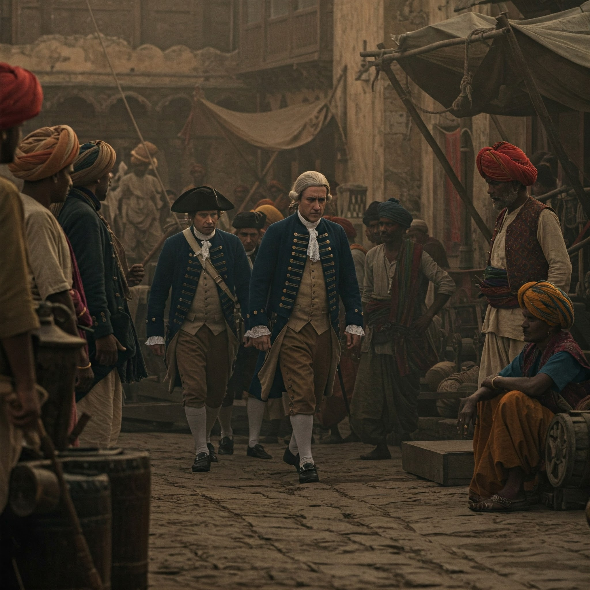

16. The Arrival of the French in India
1. Background and Formation of the French East India Company
- The French East India Company (Compagnie française pour le commerce des Indes orientales) was established in 1664 under the leadership of Jean-Baptiste Colbert, the finance minister of King Louis XIV.
- Its main objective was to compete with other European powers, particularly the British and Dutch, in the lucrative trade with India and Southeast Asia.
- The French initially focused on trade in spices, textiles, and indigo, aiming to establish a stronghold in the Indian Ocean.
2. Arrival in India and Early Settlements
- The French first arrived on the Indian coast in the late 1660s.
- They established their first factory in Surat (1668), which was already a bustling trading hub.
- However, the most important French settlement was established at Pondicherry (Puducherry) in 1674, on the Coromandel Coast (now in Tamil Nadu).
- Pondicherry became the headquarters of French operations in India and grew into a well-fortified and prosperous trading center.
3. Major French Settlements in India
Pondicherry (Tamil Nadu)
- Became the capital of French India.
- Developed into a thriving port city with French architecture and administration.
- Frequently attacked and recaptured by the British during colonial wars.
Chandernagore (West Bengal)
- Situated on the Hooghly River, near Calcutta.
- Served as a key center for trade in silk, indigo, and saltpetre.
Mahe (Kerala)
- Located on the Malabar Coast.
- Important for the pepper and spice trade.
Karaikal (Tamil Nadu)
- Acquired in 1739.
- A coastal town south of Pondicherry, used for maritime trade.
Yanam (Andhra Pradesh)
- Situated near the Godavari River.
- Important for rice and textile exports.
4. Anglo-French Rivalry and Wars in India
- The French East India Company became a major rival of the British East India Company, especially in the Carnatic region (southern India).
- This rivalry eventually escalated into military conflicts known as the Carnatic Wars.
Carnatic Wars (1746–1763)
- First Carnatic War (1746–1748): Triggered by European conflicts (War of Austrian Succession).
- Second Carnatic War (1749–1754): A power struggle between Indian rulers, with the French and British supporting rival claimants.
- Third Carnatic War (1756–1763): Part of the global Seven Years' War. The decisive Battle of Wandiwash (1760) led to British victory.
5. Decline of French Power in India
- After their defeat in the Third Carnatic War, the French were allowed to keep their settlements in India only for trade, not for political or military purposes.
- The Treaty of Paris (1763) ended hostilities but restricted French ambitions in India.
- Unlike the British, the French East India Company lacked consistent support from the French monarchy and suffered from internal mismanagement.
6. Legacy of the French in India
- Although they did not succeed in establishing a large empire like the British, the French left a distinct cultural and architectural legacy.
- French language and customs in Pondicherry (which remained under French rule until 1954).
- Colonial buildings, churches, and street names in French.
- A small but vibrant Franco-Indian community still exists in parts of India.